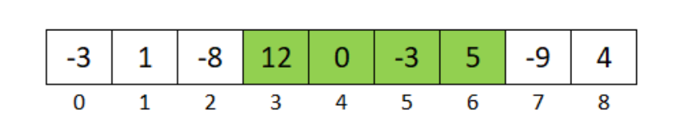
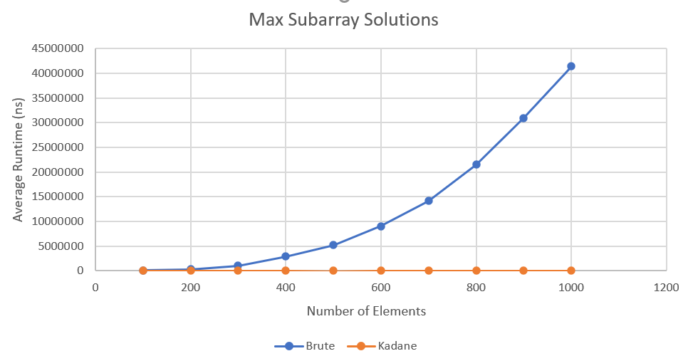

Like the project above, this project also implements two different approaches, but in finding the maximum continuous subarray of a given array of integers.
The brute force approach is to try every possible subarray of the array of integers, and find the one that results in the largest sum. In most cases, there is a better approach than brute force.
Kadane's algorithm is a common solution for finding the maximum continuous subarray. Kadane's alogorithm runs through the array once, and is always comparing the current running sum to the best (max) sum so far.
I tested both the brute force method and Kadane's with arrays of size 100 to 1000 in increments of 100, and plotted the results. As you can see, brute force performs worse and worse as the array size increases, while Kadane's held up against larger array sizes.
If you are interested in seeing how I chose to implement this project, feel free to take a look at the souce code.

